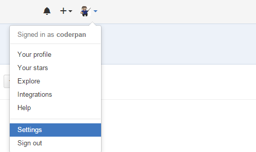
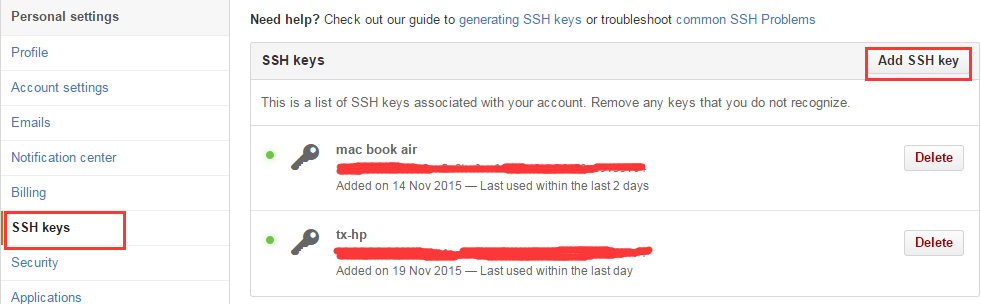

git客户端设置网络代理
本文主要介绍在有网络限制的情况下如何设置代理访问git远程仓库（包括ssh、http/https协议），git相关操作在其它博文中讲解。
推荐使用SSH协议，因为可以在github网站添加ssh key建立与本地的信任关系，pull/push等操作就不需要输入蛋疼的用户名密码了，当然，如果你喜欢输入密码或者本地SSH被屏蔽，那么就另当别论了。
使用http/https协议
使用此协议设置代理比较简单：1
2$ git config --global http.proxy http://xxx.com:8080
$ git config --global https.proxy http://xxx.com:8080
之所以要设置–global，这样才能修改~/.gitconfig，变成全局的，你的每一个branch都会生效。
使用ssh协议
首先要建立本地ssh-agent与github的信任关系，这个时候就需要ssh key了，也就是ssh公钥，具体步骤如下：
Windows环境
以我自己为例，使用的是git Bash（MINGW64）:
生成ssh key
1 | $ cd ~/.ssh #如果没有此目录，手动创建 |
如果失败，可能是ssh-agent没有启动，需要执行以下命令,如果上一步没有失败，跳过下面的步骤：1
2
3$ eval $(ssh-agent)
Agent pid 7636
$ ssh-add ~/.ssh/id_rsa
此时~/.ssh/目录下应该会产生两个文件：id_rsa id_rsa.pub,我得理解是：不带pub的是本机的ssh密钥，ssh-add产生的.pub是对外的公钥。
接下来我们要将id_rsa.pub的内容添加到github上去，建立信任关系：


接下来的步骤相信大家都可以完成了。
设置ssh代理
接下来就是设置代理的关键一步了，当然如果网络没有限制的同学就可以不用凑热闹了：
在~/.ssh/下面新建一个config文件，vim ~/.ssh/config编辑：1
2
3
4Host github.com *.github.com
ProxyCommand connect -H xxxx:8080 %h %p #设置代理
IdentityFile ~/.ssh/id_rsa #千万注意了，这里不是公钥的地址哦，是私钥
User git
ProxyCommand说明了设置代理，其中connect是连接代理服务器的名字，git bash自带的，如果是Linux的话，需要安装sudo apt-get install connect-proxy
接下来可以测试下：1
2ssh -T git@github.com
Hi username! You've successfully authenticated, but GitHub does not provide shell access.
到这里，git的代理就算配置完成了，这个时候我们就可以git pull/push，如果是按照上面配置了ssh的话，就不用输入讨厌的密码了。
转载本站文章请注明作者和出处 码畔-coderpan，请勿用于任何商业用途